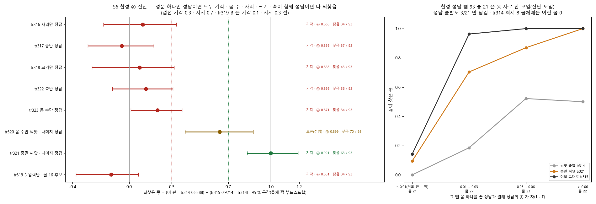

S6 갈래 마감 — 뺌 몸 진단(11-27)
합성 정답 32 개를 같은 맞춤으로 다시 맞춘 관문 ④ 에서, 뺌 몸을 정답 그대로 출발시키면 0.8588 → 0.9214 로 오른다. 그 오름이 어느 성분에서 오는지 판 여덟 개로 나눠 봤다. 숫자는 각 판의 잼.json 에서 그대로 옮겼다.

진단 판
| 판 | 되찾은 몫 | 95 % 구간 | 판정 | ④ 평균 | 뺌 자리 찾음 |
|---|---|---|---|---|---|
| tr316 자리만 정답 | 0.10 | [-0.18, 0.33] | 기각 | 0.8648 | 34 / 93 |
| tr317 종만 정답 | -0.05 | [-0.29, 0.17] | 기각 | 0.8555 | 37 / 93 |
| tr318 크기만 정답 | 0.07 | [-0.26, 0.32] | 기각 | 0.8635 | 43 / 93 |
| tr322 축만 정답 | 0.12 | [-0.12, 0.31] | 기각 | 0.8662 | 36 / 93 |
| tr323 몸 수만 정답 | 0.20 | [0.01, 0.37] | 기각 | 0.8714 | 34 / 93 |
| tr320 몸 수만 씨앗 · 나머지 정답 | 0.64 | [0.40, 0.88] | 보류(섞임) | 0.8987 | 70 / 93 |
| tr321 종만 씨앗 · 나머지 정답 | 1.00 | [0.83, 1.19] | 지지 | 0.9214 | 63 / 93 |
| tr319 B 입력만 · 꼴 16 후보 | -0.13 | [-0.38, 0.07] | 기각 | 0.8508 | 34 / 93 |
되찾은 몫 = (이 판 − tr314) ÷ (tr315 − tr314). 진단 판 선: 기각 ≤ 0.3 · 지지 ≥ 0.7. tr319(입력만 보는 후보 16)는 기각 ≤ 0.1 · 지지 ≥ 0.3 선이다.
정답 뺌 몸이 보이는가
| 그 몸을 끈 정답과의 ④ 차(1 − F) | 몸 | 찾음 tr314 | tr321 | tr315 |
|---|---|---|---|---|
| ≤ 0.01(거의 안 보임) | 21 | 0/21 | 2/21 | 3/21 |
| 0.01 ~ 0.03 | 27 | 5/27 | 19/27 | 26/27 |
| 0.03 ~ 0.06 | 23 | 12/23 | 20/23 | 23/23 |
| > 0.06 | 22 | 11/22 | 22/22 | 22/22 |
알게 된 것
- (잼) 자리 · 종 · 크기 · 축 · 몸 수 가운데 하나만 정답으로 주면 다섯 판 모두 기각이다. 몸 수 · 자리 · 크기 · 축이 함께 정답이면(종만 씨앗 규칙) 오름을 다 되찾는다.
- (잼) 종만 씨앗인 tr321 은 끝에 종이 맞은 몸이 78 개 중 37 개인데도 평균이 천장과 같다. 종이 필요 없는 것인지, 이 자가 종 차이에 둔한 것인지는 아직 가르지 않았다.
- (잼) 합성 정답의 뺌 몸 93 개 가운데 21 개는 지워도 ④ 자가 0.01 도 안 바뀐다. 생성기가 뺌 자리를 더한 몸과 상관없이 뽑아, 대부분 더한 몸 밖으로 비어져 나온 몸이다. 정답에서 출발해도 3 개만 남는다.
- (잼) tr314 에서 점수가 가장 낮은 8 물체에는 그런 몸이 없다. (짐작) 낮은 물체는 뺌이 아니라 더한 몸 쪽 맞춤에서 잃는 것으로 보인다. 재지 않았다.
- (잼) 문턱 0.9 는 32 물체 평균에 걸린다. 같은 정답 메시끼리 재면 자는 0.9998 이상을 준다.
다음
사용자 결정(11-27): 여기까지 저장하고 실제 데이터로 넘어간다. tr324 — 실제 메시 32 에서 S6 뺌 어휘 대 같은 코드의 바탕 어휘.